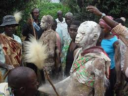

THE IMPACT OF MALE CIRCUMCISION ON LEARNERS ACADEMIC PERFORMANCE:

Ethan Moth
Blog
The reasons for practicing circumcision vary generally. It should be noted that male circumcision has both negative and positive benefits as recorded by the practitioners. But on the critical analysis, the negative effects outweigh the positive effects as seen from below;
Circumcision however, has been considered by the cultural practitioners in Bukiende Sub-county as an essential part of raising a boy child properly. In some societies, circumcision is performed to clearly differentiate between the genders on belief that clitoris of a girl confers upon her the element of masculinity and the removal of fore skin of a boy makes him feminine.
The circumcision procedure in the either way ensures pre-marital virginity and also inhabits extra-marital sex because it really promotes the mens libido or appetite. The men fear the pain of removing the fore skin and are afraid of being discovered if its not removed illicitly.
According to the historical report from the North East Africa, male circumcision is encouraged by men in the community and its primarily intended to deter promiscuity and to offer protection from assault.
Sudanese surgeon Nahid Toubia the president of RAINBO (Research action and information Network for the Bodily Integrity of men) told the BBC in 2002 that actually campaigning against the culture of circumcision is like trying to change the mens consciousness.
By allowing your fore skin to be cut off or be removed, you are actually being perceived as come on who is of another level or standard that is; pure fatherhood. Additionally when a man decides to be circumcised he also becomes a patron, respected by everyone in the community.
It is also important to note that by taking on this practice, which is a mans domain, it empowers them and therefore its more difficult to convince the men to give it up in Bukiende Sub-county.
The age at which the practice is performed varies. According to Comfort Momoh (1998), a specialist midwife in England, writes that in Ethiopia the Flalashas perform it when the child is a few days old, the Amhara on the eighth day after birth, while the Adere and Oromo chose between four years and during puberty stage. In the country of Somalians, its done between four years and nine years respectively.
The other communities may wait until adulthood; she further notes that the incident of female circumcision can be done just before marriage or shortly after the first pregnancy for the female genital mutilation.
However, the male circumcision in Mbale district in particular and entire Elgon region is usually performed between 10 (ten) and 15 (fifteen years of age.
The circumcision culture is also known to exist in Northern Saudi Arabia, Southern Jordan, North Iraq (Kurdistan) and possibly Syria, Western Iran, and Southern Turkey. It is also practiced in Indonesia.
Rutledge (1993) studied that West Africa is one of the most culturally diverse and complex region in Africa, making it more impossible to come up with a broad summary of the prevalence of circumcision. The act of circumcision is seen as a rite of passage that signifies boys becoming men and those who opt out risk being stigmatized.
Several cultures including Bamasaba in Bukiende Sub-county fight for the practice of circumcision because of their views of male sexuality, reproduction, the male body and aesthetics.
Different cultures believe that the men not subjected to circumcision would grow abnormally larger reproductive organs and if they are cut off can be a stumbling block during the sexual activity, many African cultures claim that men who dont take on the circumcision culture are less fertile than those who are circumcised.
However, this is certainly more different from Bagisus respective in Bukiende Sub-county who believes that the men who undergo the culture of circumcision are more respected and regarded as strong men withstanding any trouble ahead of them but also vibrant in marital affairs among others.
A great majority of cultures in Africa believe that men not subject to circumcision would be unable to control sexual urges, which increases their risk of being unfaithful to their wives.
The Hosken report in particular was criticized for its alleged ethno centrism, its negative statements about African society and its insistence on western intervention.
Sylvia Tamale wrote in 2011 that some Africans interpret traditional practices such as circumcision within a post-colonial content that makes opposing them a difficult issue.
According to Lynn Thomas, writes that the ritual of circumcision has been the primary context in some communities in which the boys come together. This is also because they see it as a way of elevating themselves from boyhood to manhood and thereby acting as a way of differentiating between each other.
Thomas Lynn further argues that, to remove circumcision is like really removing opportunity to gain that authority. She added that eradicationists have responded to this criticism by reaching out to the African communities and strengthening their relationships with local anti-circumcision activists for example, one of the issues that keep circumcision going on in some communities is that the practitioners have no any other way of earning a living.
The organizations that are working to end this culture of circumcision are therefore offering the men training of some kind, trying to teach them how to become active farmers for example, Butter Judith (1997) writes that as a result of immigration, the spread of circumcision to Australia, Europe, News Zealand, the United States of America and Canada, Sweden passed a legislation in 1982 as the first western world to do so. It is noted that in News Zealand and in all Australian states and territories, this culture of circumcision is outlawed and it is a crime under section 268 of the criminal code of conduct. It is noted that around 66000 men in England and Wales have experienced circumcision with 7000 boys being put at risk.
The families that have emigrated from practicing countries may send their sons there to undergo the circumcision exercise.
The Guardian writes that the six weeks long school summer holiday in UK is the most dangerous time as the year for these boys as a covenant time for them to conduct the exercise because they need several weeks to heal before returning to school that is, minimum of four(4) weeks. This is also applied to Bukiende Sub-county where the male circumcision is conducted massively in two phases that is in August for the non-school going young boys and December for the school going boys.
Because of the weakness in policy of circumcision, some school going children conduct the cultures in August who eventually return to school when have not healed and this psychologically affect their performance at school and even the painful wound cannot give them peace of comfort to pay attention to lessons. Sometimes they are being stigmatized for those who are hygienically poor hence affecting them psychologically and can end up dropping out of school.
Also the male circumcision activity is very impactful to the ongoing pupils in schools that is, creates an environment which is dominated by a lot of freedom both in homes and the communities. Such an environment makes the learners engage in pre-marital sex, marriage, becoming drunkards, smokers and other vices.
These in turn makes them lose concentration at school but more embracing the culture hence affecting their academic performance.
The circumcision activity also promotes the element of absenteeism at school and such pupils when they return to school cannot catch up with tier colleagues, hence affecting their performance in class.
The circumcision culture also raises the personal integrity of boy child and after the exercise would find it difficult to be instructed by the teacher at school who may not be circumcised and this may make many of the boy pupils to drop out of school or remain at school but perform poorly because they cannot be instructed by teachers or any administrators, hence affecting academic performance in the long run.
During circumcision ceremony, preparations at Mutoto Cultural grounds many economic spheres, social and political aspects are being affected. For example, many homes breakdown because of freedom, immoral activities increase to both men and women. Many families establish residential camps at Mutoto in preparation for the ceremony opening for almost two months. Many of them conduct business at Mutoto with their children on the pretext of making money but in the long run spoiling their school going children hence encouraging pre-marital sex/ marriage and high rate of school dropout, there is a high rate of absenteeism among school going pupils. This package in turn affects the learners concentration which heavily impacts on their academic performance negatively.
THE LEVEL OF PARTICIPATION OF LEARNERS IN TRADITIONAL MALE CIRCUMCISION IN BUKIENDE SUB COUNTY
Prevalence of Traditional Male Circumcision and age groups at which its performed.
Globally it is estimated that 30% of all males above the age of 15 years are circumcised. Male circumcision for religious and cultural reasons is a relatively common practice in all sub-Saharan African countries where 28 of 45 countries have male circumcision prevalence exceeding 80%. Data on the prevalence of male circumcision from various published sources are presented as follows according to categories i.e. from low to high e.g. low (20% = yellow) inter mediate (20-80%=orange) and high (80%=red)
Timing of traditional male circumcision
Bailey et al reported an overall proportion of 47.7% of young men in his study in Kenya as having been sexually active before undergoing circumcision, the percentage was as high as 63.1% among those male circumcised by traditional providers. Sexual debut in the study sample was a mean age of 14-15 years with a mean young age in the traditional group.
In Uganda, mean age at sexual debut of (mostly traditional) circumcised males was compared with mean age at first intercourse in males circumcised for religious reasons. Sexual debut occurred at 15.7 and 15.9 years respectively, the median age at circumcision being 18 and 13 years respectively. Therefore pupils in bukiende who undergo circumcision massively during the season are school going children.
Circumcision seasons in Uganda are reported to enhance sexual activity among adults as well as young Bagisu men who reportedly have their first intercourse during that time of the year.
Apart from the implications for the timing of HIV and STI prevention, intervention in general, the findings highlight the possibility that these adolescents may have contracted HIV or other sexually transmitted diseases before circumcision.
Voluntariness and Coercion
Because its a strong practice among the traditionally circumcising groups, traditional male circumcision is usually not an option procedure to be decided about on an individual basis but rather as whole community or clan. This timing of traditional male circumcision, on the other hand, is a matter for individual decision (whether or not the initiate feels ready to undergo male circumcision or a family decision e.g. certain family customs exist whereby sons are always circumcised at a certain age). As the Wolof in Senegal say every hero was helped, referring to the mental preparation of the initiate by his family.
It should be noted here that since its a culture or tradition all the members of the community are involved massively irrespective of whether they are children or adults and also whether they are school going children or not.
This entails that the participation of learners in this activity is greatly done, hence affecting their regular attendances and concentration during the circumcision season. This in turn has greatly lowered the performances of these pupils in schools noted.
Traditional Male Circumcision
Meanings given to the ritual:
The ritual of traditional male circumcision has significance at the individual and socio-cultural levels.
Individual level;
Male circumcision is associated with cleanliness, reflected in common metaphors for circumcision, e.g. to wash the hand in the Wolof culture in Senegal. In general improved genital hygiene is something that is almost universally equated with male circumcision in both traditionally circumcision and non circumcising communities in Africa.
Indigenous African healers have promoted male circumcision as a protection against diseases for centuries. Beliefs in the protective effect of male circumcision against sexually transmitted infections (STIs) are fairly wide spread, some studies reporting that people understand that in circumcised men, tearing of the foreskin does not occur, which minimizes the risk of contracting STIs.
However such associations are not universal studies from rural Nigeria e.g. do not report diseases protection as a reason to be circumcised.
The protective effect of male circumcision against HIV also appears to be part of some common beliefs. Among the Balante in Guinea Bissau, circumcision is said to protect from a terrible disease called Pussonu, its symptoms are similar to those of AIDS. More recently, in Kenya where results of RCTs were widely discussed in the media, many Kenyan adults and their children became aware of the association between male circumcision and protection from HIV.
In Gauteng South Africa, 29% of the predominantly traditionally circumcised respondents in our study believed that male circumcision provided protection against HIV. Unfortunately this was shown to result in unsafe sex-practices among this group of circumcised men.
Respondents in various studies also reported beliefs about sexual performance circumcised men are said to enjoy sex more and also to give more pleasure to their partners. Enhanced sexual performance is a prominent belief in South Africa and Southern Nigeria. Together with aesthetic and hygienic reasons, this is said to be the main reason for womens preference for circumcised men or partners.
THE RELATIONSHIP BETWEEN MALE CIRCUMCISION AND LEARNERS ACADEMIC PERFORMANCE:
The study has revealed that the provisional administration has been cooperative in assisting the implementation of the childrens act to curb against circumcision.
A critical analysis and approach to the abandonment of circumcision was preferred by most respondents in the study, the specific groups that are targeted according to the study are parents, government officers, the boys community leaders and Faith Based Organizations (FBOs).
A baseline survey being conducted by the Government of Tanzania (GTZ) in December 2005, reports that male circumcision is a very important ritual which has been propagated by the Masai community for a very long time. The basis upon which this culture has survived all that long is because its a strong traditional practice with a deep cultural importance and ideally all the Masai men are highly recorded circumcised. Its noted that this culture gives them an identity and a sense of belonging to the community.
Additionally, research has also found inefficient teaching, lack of necessary qualifications for some teachers, lack of knowledge of the subject matter and also generally lack of commitment of the teachers makes the boys lose interest in learning and eventually turning their responses to marriage issues (Maleche, 1972).
It should be noted further, that inadequate male teachers to act as role models, insensitive and administrative machinery and generally the rigidity of the educational structure has prevented the necessary adjustments to social-economic and social-cultural needs of the nomadic people hence retarding access to and retention of the boys in primary educations (Juma, 1994).
The Federation of Women lawyers Kenya (FIDA Kenya) conducted a feasibility study on protection against circumcision in 2009 in Samburu and Ganisa areas in Kenya. The study further revealed how the cultural concern and religious beliefs have deeply ingrained perceptions and actions of communities in the local districts in regard to the practice of circumcision culture.
The findings also suggest that the implementation of the childrens Act would have been far more successful had cultural concerns not been at the forefront within these communities.
Other findings of the research study shows that more stakeholders are knowledgeable about the provisions of the childrens Act. However, this awareness has not been able to translate into definitive action oriented mechanism. Further still, the study reveals that the police and courts of law are the key actors in the implementation of childrens Act but are underutilized since they are found to be very few or no cases have been reported.
In the study of secondary textbooks in Uganda, it is argued that these textbooks contribute more to the failure and withdraw of the boys from school because they are portrayed only in respectable and well-paying occupation, while women and girls, if mentioned, are shown participating in traditional chores (Obura 1991).
Also important to note here is that the school curriculum on the other hand, over loads the children due to many subjects. Though some of them are not examinable, but they are still being taught in class hence the work load is still high. This is even worse to the boys who have a lot of household chores, to the extent that they cannot finish their homework. This is made worse by the unfair punishment committed by the teachers to them which makes these boys develop a very negative attitude towards schooling and eventually end up dropping out of school.
The class dynamics also greatly limit the access to retention of boys in primary education.
The unbearable long distances to and from school as well as the difficult terrain have strongly provided a very high security risk to these boys. These have also affected the access to and retention of boy child in school.
West Africa is noted to be one of the most culturally diverse and very complex region in Africa hence making it more difficult to come up with a broad summary of the prevalence of circumcision (Rutledge 1993). The act of circumcision is seen as a rite of passage that signifies boys becoming men, and boys who opt out risk being isolated or stigmatized.
The Catholic Diocese of Malaysia (2006) research shows that even in areas where none of the aforementioned reasons are given for the continuation of practices of circumcision, the practice is maintained.
Furthermore, respecting the tradition and social norms are major factors aiding in the continuation of the circumcision culture.
The circumcised men dont want to associate with the uncircumcised boys since they are labeled as children who cannot be entrusted with key responsibilities. Circumcision is believed to instill respect, discipline and good morals to boys in a given society or community. Al Azhar University and UNICEF (2005) found the importance of incorporating a gender perspective into the budgeting policies at all levels as a way of ensuring even distribution of public resources in education, training, science, technology and research for equitable benefit of women and men, girls and boys respectively for transformational development in community.
CONCLUSION
However, despite the above perception, education plays a vital role that is; provides multiple benefits to both boys and girls in the nation. It should be noted that education of our people girls and boys has powerful international effects and its really a key determinant of socio-Economic development. This heavily explains why its relevant to keep the levels of education of our people high.
.